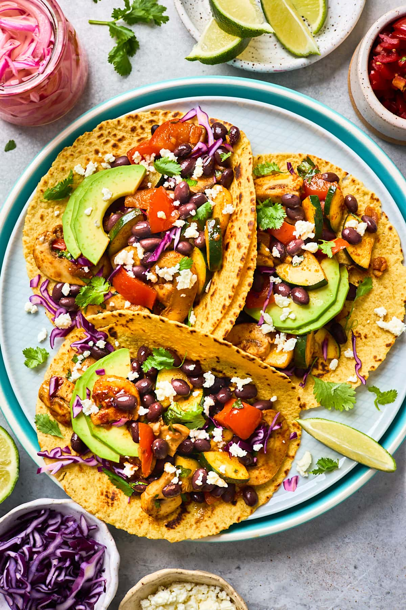

Veggie Tacos

A delicious taco recipe that's suitable for vegetarians
Ingredients
- Taco shells
- Rice
- Black beans
- Onions
- Peppers
- Mushrooms
- Refried beans
- Seasoning mix
- Tomatoes
- Guacamole
- Chilli paste
Steps
- Rinse 1 cup of rice, put it in a pot of water and bring to the boil
- Rinse and chop onions, mushrooms, tomatoes and peppers
- Add some oil to a frying pan and add the ingredients
- Sprinkle some spicy seasoning mix over the ingredients
- In a separate pot, heat up some black beans
- Add chopped tomatoes to the pan
- Add half a cup of water to the pan
- Add half a can of refried beans to the pan
- Drain the black beans and add to the pan
- Turn oven to 200 degrees and put the taco shells in on a baking tray
- Prepare the guacamole while occasionally stirring the ingredients
- Once the rice has cooked, add it to the pan and stir
- Remove tacos from the oven
- Scoop the ingredients into the tacos and add guacamole and chilli paste to taste